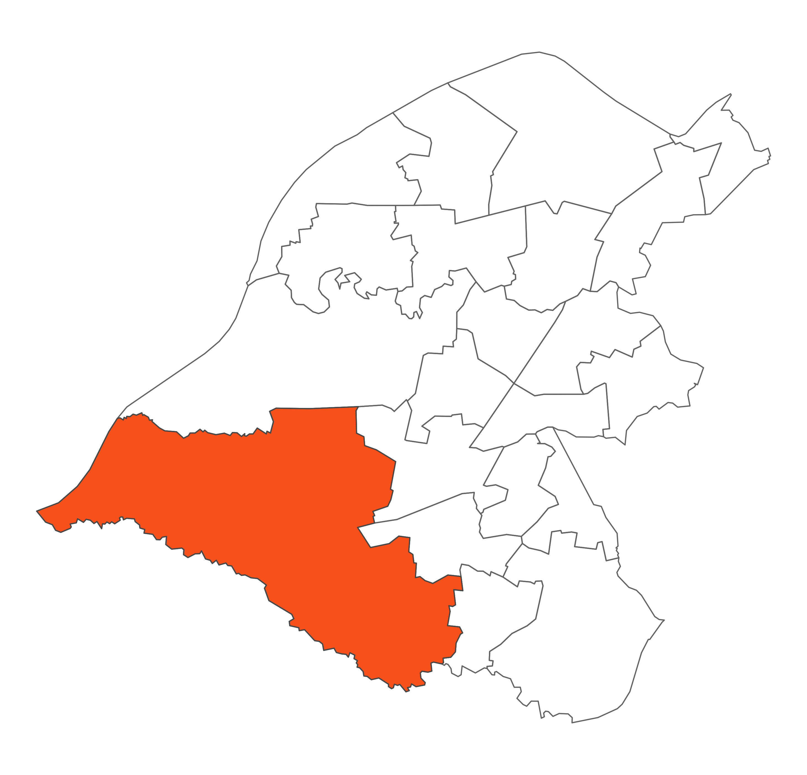

 Bowdon is the largest ward in Trafford and is a combination of several small, rural villages surrounded by open countryside, including Dunham Massey Country Park and more densely populated residential areas. The majority of the ward is owned by the National Trust as part of the Dunham Massey Estate, which is a fantastic asset for the residents of the Borough. The Estate includes Dunham Massey Hall and a deer park. Bowdon is a semi-rural ward and has a low population density. Bowdon is a largely affluent ward and is an attractive place to live.